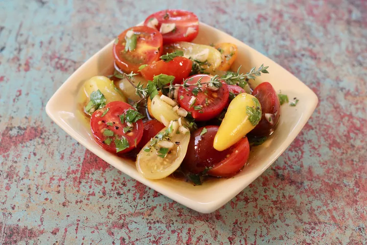

Marinated Garden Tomatoes

Ingredients
- ¾ cup red wine vinegar
- ½ cup olive oil
- ⅓ cup chopped fresh parsley
- 1 tablespoon snipped fresh thyme
- 3 cloves garlic, minced
- 2 teaspoons coarsely ground salt
- ½ teaspoon coarsely ground black pepper
- 6 large tomatoes, sliced 1/4-inch thick
- ½ cup thinly sliced green onions
Step 1
Combine vinegar, olive oil, parsley, thyme, garlic, salt, and pepper in a small bowl; mix well.
Step 2
Place tomatoes and onions in an 11x13-inch glass dish.
Pour marinade on top, making sure to coat vegetables evenly.
Cover and refrigerate, 4 hours to overnight.